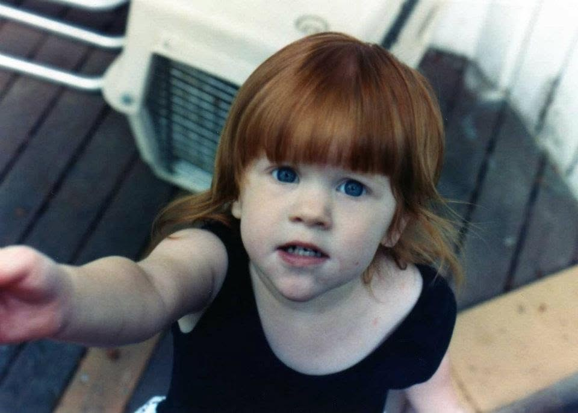

Interwoven Family Care

Adaptive in-home practical support and coaching for all families.
"I highly recommend her to families seeking child care or support, especially families with added layers of needs."- Heather Jeng
Interwoven Family Care offers hands-on family coaching and adaptive in-home support for families with children and teens across Pierce County. IFC offers help with routines, transitions, respite care, local resources, and other practical support you may need.

When daily life is hard to hold
For the parts of family life that still feel hard after the appointment, diagnosis, school meeting, or support recommendation. You do not need the perfect words before reaching out.
- Mornings, evenings, bedtime, drop-off, appointments, or leaving the house have become some of the hardest parts of the day.
- You need another steady adult who can help support your children, home routines, and your capacity at the same time.
- Your family is adjusting after a diagnosis/concern related to health, sensory needs, Autism, ADHD, development, or school.
- Your child needs care that is as unique as your family is. Shaped around regulation, communication, sensory needs, scaffolding, and your rhythm.
- You are navigating IEP meetings, 504 plans, referrals, waitlists, appointments, resources, or advocacy decisions.
- You need real, practical help. You need breathing room, respite without feeling judged, managed, or misunderstood. You deserve to be heard.
Ways we support you
Implementation & Resources
Turning therapy strategies, provider recommendations, and school ideas into practical next steps at home. Providing many local and trusted resources and connections.
We focus on solutions that fit your real life, capacity, household rhythm, and circumstances.
Routines & Transitions
Bedtime. Mornings. Leaving the house. Sometimes the smallest parts of the day take the most energy.
This may include emotional regulation, skill-building, scaffolding independence, and practical strategies that help daily life feel steadier and more manageable.
Family Support
Relationship-based care for families whose needs are more layered than standard childcare can hold.
This may include caregiver/parent support, childcare, immediate problem-solving, and a trusted sounding board that is not only knowledgeable about local resources but active in the local community.
Breathing Room
Sometimes help is having another capable adult in the house during the parts of the week that take the most out of everyone, especially you.
Practical support that reduces overwhelm and gives your family more room to recover, connect, and reset as a family.
Environment Support
Tell me what is not working, let me observe, and I can help shape indoor and outdoor spaces with less friction, from scaffolding independence in bathrooms or bedrooms to developing an engaging play environment that keeps everyone who lives there centered.
Advocacy Support
Navigating schools, providers, IEP meetings, 504 plans, referrals, and various systems while carrying family life is a lot.
Our advocacy support includes meeting preparation, priority planning, and confidence building for you as you continue to advocate for your family.
"All human beings are born free and equal in dignity and rights."
Our Approach
Care Starts with Understanding
Childcare is only one thread in the larger weave of family support.
Families are not a collection of separate needs. They are whole systems shaped by relationships, routines, values, care, stress, and capacity.
Interwoven Family Care begins by understanding the whole picture and then building care that fits your real family.
Whole-Family Lens
Care that considers you, your children, your routines, relationships, and the household as a connected whole.
Adaptive by Design
Care that changes as your family's needs and circumstances change.
Rooted in Relationship
Trust comes first. Real support is built through consistency, curiosity, and respect. That is part of the core of IFC.
Community through Care
Meaningful care has connection, belonging, and access to the people, resources, and relationships that help you thrive. We can help you find support in your community.
Families are not meant to do this alone.
How We Start
-
Reach Out
Send an email, schedule a 30 minute call, or fill out an inquiry form and let's go from there.
-
Have a Conversation
You can start with whatever feels hardest, what is already working, what you have tried, or just what you wish felt easier.
-
Choose Your own Adventure
Now we can look at both your needs and services offered and figure out together what would best help you.
An open and honest conversation
Cost of Care
Interwoven Family Care is private pay at this time. Cost is something we can talk through as soon as you want. You do not need a perfect plan before reaching out. We can talk about what would help, what feels realistic, and what options are worth exploring.
IFC is learning more about possible funding paths and family support resources. If you already receive services or support, you are welcome to ask whether there may be a connection.
Talking through care also means talking through what is sustainable for your family. That includes financially.
The goal is to work with families openly in a way that is honest, practical, and clear.
Feeling ready?
Start with the inquiry form, schedule a call, or send an email.
About IFC
Built around real family life
Interwoven Family Care is made for the parts of family life that do not fit neatly into a preset service: routines, relationships, stress, capacity, values, chaos, and calm.
Care is shaped with families, not pushed onto them. The work begins with listening, documenting, noticing what is already happening, and building from there.
This work is for families needing practical, relationship-based help that respects the people who live there.
The goal is less stress, more steadiness, and more room for families to enjoy their time together.
Kind Words
Built on Trust
Bri has been a remarkable caregiver for both of my children, first when my oldest was a toddler and again years later with my younger child. She brings genuine warmth to families and is deeply invested in parent engagement. I have never seen someone connect with children the way she does.
One of my children is nonverbal and autistic, and Bri went above and beyond to connect with him through visual tools and his special interests. She is thorough, follows up with detailed care plans, and her expertise in child development shines through in every interaction. I trust her completely and highly recommend her holistic approach to anyone seeking exceptional child care and family support. I know any parent who walks through her door will feel the same trust and warmth we did.
Bri's holistic care for children, seeing and accepting them just as they are, is phenomenal. She has always shown up for our neurodivergent daughter with real presence and investment in our child's special interests and favorite activities. She brings the same warmth to the whole family and is a true partner in care.
Bri's reliability, strong background in early childhood education and child development, and excellent judgment are additional reasons we have always rested easy when our daughter has been in her care. I highly recommend her to families seeking child care or support, especially families with added layers of needs, including IEPs, 504s, diagnostic processes, and respite care. Our daughter adores Bri and always enjoys their time together.
Bri was an excellent caretaker for my child. She was patient and kind, and took my child's needs to heart. I wholeheartedly recommend her services.
About the Founder

Little Bri, before she had language for being AuDHD. I know what it can mean to be a child who notices everything, feels deeply, and is still learning how to communicate. That kind of understanding is woven into how I care for children and families.
I'm Brianna (Bri) Waugh, founder of Interwoven Family Care. I built this work after more than a decade alongside children, caregivers, and families in early childhood centers, in-home care, and community programs.
Again and again, my work has brought me alongside children with higher support needs, neurodivergent children, and families holding several kinds of complexity at once. I am comfortable in the thick of family life: routines, transitions, big feelings, uncertainty, problem-solving, and the moments when everyone is doing their best and still needs more help.
My background includes Reggio Emilia-inspired programs, Montessori centers, Head Start and Early Head Start classrooms, in-home care, and community-based family support. I lean play-based and relationship-centered, with deep respect for environments that encourage independence, curiosity, critical thinking, rhythm, regulation, and belonging.
More than anything, I believe this work has to be specific to your family. I want families to reach out and talk with me, because your family's nuance matters. Your children, your household, your rhythms, your worries, your values, and your hopes all shape what care should look like for you.
FAQs
Common Questions
What areas do you serve?
IFC is based in Tacoma, Washington, and works with families in communities throughout Pierce County. Not sure whether you're in range? Reach out and we'll figure it out together.
Is IFC therapy or clinical treatment?
No. IFC is not therapy, clinical treatment, crisis intervention, or a replacement for medical or mental health professionals. IFC offers practical, relationship-based family support that can help carry recommendations, routines, and everyday care into real life.
Do you support more complex family needs?
Yes. This is central to our work. IFC works with families navigating all kinds of complex needs, including Autism, ADHD, sensory needs, developmental differences, and higher-support seasons. Care is shaped through listening, observation, and respect for what each person and the household as a whole are already communicating, so support can grow from real life.
What does "adaptive" care mean?
Adaptive care means the shape of our work follows the shape of your life. We do not ask families to fit into a preset menu. We build care around your real situation and adjust as your needs, rhythms, and seasons change.
What ages do you work with?
Birth through 18 is IFC's specialty, but our work is with whole families. Care may include caregivers, siblings, extended family, and the household as a whole. If you are wondering whether your situation fits, tell us about your children, your household, and what you're carrying. We'll talk together about what makes sense.
What does support look like?
Support is shaped around your family's real life. It might begin during the after-school or evening stretch, when everyone is tired, the next transition is coming, and the household still needs care, dinner, regulation, and connection.
In those moments, I may be another steady adult with your children: playing, helping with transitions, supporting big feelings, noticing communication needs, or helping the evening move with less overwhelm.
As I get to know your family, support may also include the pieces around care: folding laundry, loading dishes, organizing a space that is not working, preparing for an IEP meeting, building a calmer morning rhythm, or talking through what keeps feeling hard at home.
I pay attention to patterns, stress points, communication, and what might help tomorrow feel a little smoother. Support should feel steady, respectful, and relieving, like someone is noticing what is heavy and helping you carry it.
How does scheduling work?
Scheduling starts with a conversation about what your family needs: regular weekly care, support during mornings, after-school, evenings, or bedtime, help preparing for changes in school or family routines, breathing room during a hard season, or something in between. From there, we talk through what feels realistic, sustainable, and supportive for your household.
What are your rates?
Support is adaptive, so pricing is not one-size-fits-all. We start by understanding your family's needs, schedule, and capacity, then talk through what kind of support is realistic and affordable. Some families need a short stretch of help around a transition; others need regularly scheduled support. The pricing examples page can help you picture a few possible support structures before the conversation. Nothing is decided until we have named what fits for your family. At this time, IFC is private pay and does not bill insurance directly.